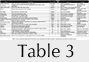

Academic software downloads from Google Code: useful usage indicators?
Mike Thelwall and Kayvan Kousha
Introduction
Academic research is often published in journal articles, monographs, book chapters, and conference papers but the ultimate goal is to produce new and useful knowledge and this can appear in other forms. This diversity is recognised in the UK Research Excellence Framework 2014, for example, with journal articles, books, book chapters, reports, physical artefacts, exhibitions, performances, patents, compositions, designs, research reports, software, Website content, digital or visual media, research data sets and databases all explicitly listed as valid types of academic output (REF, 2013).
Journal articles are sometimes assessed with the aid of citation analysis (e.g., in some subject areas of the UK 's Research Evaluation Framework for University research) and citation counts and publisher prestige (Torres-Salinas, Robinson-Garcia, Jimenez-Contreras, and Lopez-Corza, 2012) can be used to help assess monographs (Kousha, Thelwall, and Rezaie, 2011). Although the altmetrics movement (Priem, Groth, and Taraborelli, 2012; Priem, Piwowar, and Hemminger, 2012) is currently developing new types of impact indicators from the Web, its main focus is on journal articles and, to a lesser extent, books (e.g., Thelwall and Kousha, 2015ab, Kousha and Thelwall, 2015). The remaining output types are normally assessed by peer judgements in national research assessment exercises, and for tenure, promotion and funding applications.
This can be problematic for those producing outputs lacking quantitative indicators of value or impact and can make the evaluation of such outputs more time-consuming. As a result, it is important to assess whether any data could be gathered to inform decisions about the impact or quality of a wider variety of research outputs.
One type of non-standard academic output is the online video. Some research projects with an educational focus have produced YouTube videos and can make a case for their success by reporting download counts (Haran and Poliakoff, 2011). This statistic is problematic for videos, however, since the reach of a video may not be an indicator of its academic value (Kousha, Thelwall, and Abdoli, 2012).
Scientific datasets also have a significant role in research communication in some fields, such as medical genetics (Anagnostou, Capocasa, Milia, and Bisol, 2013; Borgman, 2012). Moreover, there has been a call for a citation-like data usage index to help assess the impact of scientific datasets (Ingwersen and Chavan, 2011) and Thomson Reuters (2015) has recently created the data citation index for the Web of Science that includes information about nearly two million data studies and datasets. A recent study found that only 15% of the datasets had been cited, however (Peters, Kraker, Lex, Gumpenberger, and Gorraiz, 2015), although it is not clear whether this is because few of the indexed datasets are useful in research (Wallis, Rolando, and Borgman, 2013) or because they are not being formally cited, when used. Counts of citations to the data did not have a significant positive correlation with a range of altmetrics. More fundamentally overall, impact is difficult to assess in some subject areas (Belfiore and Upchurch, 2013; Belfiore and Bennett, 2010; Brown, 2002), especially if impact is defined as generally as fundamental changes in “organisations, communities or systems” (AHRC, 2015).
Software sharing is efficient from the perspective of saving the time needed to re-develop existing applications, even when they are comprehensively described in published research. Software reuse may also help with fault-free software creation (Frakes and Kang, 2005; Mohagheghi and Conradi, 2007). The reuse of programming code, the number of downloads and user ratings may reflect the success of software projects inside or outside of academia (Rossi, Russo, and Succi, 2010; Crowston, Annabi, Howison, and Masango, 2004; Crowston, Annabi, and Howison, 2003).
Free and open source software development goes further by combining code sharing and code creating by hosting code in an environment where others can modify or add to it (Feller and Fitzgerald, 2002; Lakhani and Von Hippel, 2003; West, 2003), and some research communities use code sharing sites (Coleman and Johnson, 2014). This approach is also used in industry to some extent, although there are complex organisational consequences of its adoption (Hauge, Ayala, and Conradi, 2010). Three high profile successful free and open source software development examples are the Apache Web server, the Mozilla Web browser (Mockus, Fielding, and Herbsleb, 2002) and Linux (Hertel, Niedner, and Herrmann, 2003). One popular code sharing site is Google Code, which began in 2006.
Developers can create a project, upload code and allow others to maintain or expand the code. Version control is particularly important when multiple coders are working together (Dabbish, Stuart, Tsay, and Herbsleb, 2012; Rodriguez-Bustos and Aponte, 2012), but Google Code provides only basic support for this. Later sites, such as GitHub, provide more sophisticated inbuilt version management. Because Google Code hosts open source projects, it also makes it easy for those wishing to reuse software from different origins within their code, promoting efficiency (Hummel, Janjic, and Atkinson, 2008).
Given the importance of software to computer science and some other research areas, indicators are needed to support evaluations of their academic or wider contributions. As a valid academic output (REF, 2013; Abramo and D'Angelo, 2015) impact indicators for software may help its creators to make a case for its value in their CVs, funding applications and for research assessment exercises. Although academic software can be associated with articles that describe it (e.g., Thelwall, Buckley, Paltoglou, Cai, and Kappas, 2010) and could be cited, software is often cited directly.
In many cases, software is also used in research and mentioned in publications without being cited, but the development of automatic methods to identify these cases may help to index such uses in the future (Pan, Yan, Wang, and Hua, 2015). The most logical indicator would be the total number of users, but this information is rarely available. If software is hosted in an online public repository, however, the total number of downloads may be used as a proxy for the number of users. Individuals may download a program multiple times or download it once and then share it with many others, but these practices seem unlikely to substantially bias download counts when compared between programs.
Research questions
The objective of this paper is to assess whether download counts can be used as indicators for the academic contributions of software. With any new proposed academic–related indicator, a logical first step is to assess whether it correlates with another indicator of better known value (Sud and Thelwall, 2014). In this case citation counts are the only available indicator for such a comparison.
The most suitable repository to analyse downloads for is Google Code. Although it closed in January 2016 (Google, 2015), it is the second most popular software repository in terms of academic citations from Scopus, with 9,705 citations in Scopus (i.e., results for a Scopus advanced search for research excellence framework ("code.google.com")). Sourceforge.net has 38,769 citations but does not report download information. The newer GitHub has only 4,329 citations and does not report download information and the other major repositories are much smaller: codeplex.com has 902 citations, Bitbucket has 314 citations, and Launchpad.net has 175 citations.
Nothing is currently known about the types of software that are most frequently used by academics. Whilst some is likely to be highly specialist, with few users, other programs may have more generic functionality and may be more widely known as a result. Information about the typical types of software used can give context to download counts so that individual programs can be interpreted relative to similar types.
Open source software often has a licence attached to it and so it is possible to assess the types of licencing used. It is helpful to know which common types of licence are applied in order to better understand how the software can be used. The following research questions drive the study.
- Considering only Google Code software cited by academic articles, do download counts have a positive correlation with citation counts?
- For Google Code software cited by academic articles, is it reasonable to use download counts as an indicator of academic (rather than commercial or other) value?
- Which types of Google Code software are most cited by academics?
- How are Google Code projects cited by academics licenced?
Methods
The first stage was to identify all Google Code program that had been cited in Scopus. The common part of the Google Code project URLs (“*code.google.com/p/*”) was entered in the “References” field (REF) of the advanced Scopus search option to identify articles citing Google Code projects. The inclusion of the /p/ part of the path excludes Google's documentation and corporate projects as well as citations to the repository itself. The reference lists of the 7,005 matching articles (68% were conference papers and 30% were articles) were then downloaded for all articles citing Google Code URLs (e.g., https://code.google.com/p/smali/). A total of 7,659 Google Code URL citations were extracted from this Scopus data using an application added to the free Webometric Analyst software (http://lexiurl.wlv.ac.uk/, see Citation menu), and manually cleaned. The number of Scopus citations to each Google Code project was then calculated by consolidating the results, producing a list of 5,370 unique repositories. For instance, the URL 'code.google.com/p/gpuocelot' had been cited 21 times.
The Google Code homepages and downloads pages of the identified projects were crawled using SocSciBot (http://socscibot.wlv.ac.uk/) and then a routine was created and added to the free software Webometric Analyst to extract information from these pages. This information included the date of the first and last code upload, the total number of downloads, and the size of the largest download. Missing pages were ignored, as were the 22 pages reporting zero downloads, although the latter did not affect the results. Only a minority of pages were still in existence, leaving 1732 code projects for analysis. Spearman correlations were used to compare citations and downloads since both are highly skewed.
To identify the types of software projects cited, the labels (if any) given by the Google Code project owners were extracted from the home pages and compared against each other to identify the most common topics. Although these labels may be created for different purposes by the various code owners, this seems like a reasonable method to get a broad overview of the software types.
Results
There is a weak but statistically significant correlation between Scopus citations and total downloads for Google Code programs (Table 1), but this may be partly due to more recently deposited software having more time both to be cited and downloaded. Although older software has longer to be cited, the correlation between the first upload date and Scopus citation counts is not statistically significant, suggesting that later software is inherently more likely to be cited than earlier software, offsetting the longer time period in which older software can be cited. To factor out time differences, the key correlations were recalculated for all software first uploaded in each year from 2008 to 2012 (Table 2). The results confirm a low but statistically significant underlying Spearman correlation of about 0.3 between downloads and citations. The size of the download is almost irrelevant for citations. It is also clear that the longer after the initial upload that software has been last updated, the more citations it attracts. Presumably, programmers are more motivated to maintain software if it is often used or cited. Conversely, better maintained software may also attract more users.
| Spearman's rho | Scopus citations | Downloads | First upload date | Last upload date | Days active | Download max. size |
|---|---|---|---|---|---|---|
| Scopus citations | 1 | 0.270** | 0.015 | 0.146** | 0.146** | 0.079** |
| Downloads | 1 | -0.272** | 0.088** | 0.425** | 0.112** | |
| First upload date | 1 | 0.609** | -0.290** | 0.104** | ||
| Last upload date | 1 | 0.476** | 0.272** | |||
| Days active | 1 | 0.273** | ||||
| Download max. size | 1 | |||||
| **Significant with p<0.01 | ||||||
| Year first uploaded | Scopus citations vs. downloads | Scopus citations vs. days active | Downloads vs. days active |
|---|---|---|---|
| 2008 | 0.195** | 0.131* | 0.330** |
| 2009 | 0.319** | 0.269** | 0.406** |
| 2010 | 0.299** | 0.178** | 0.430** |
| 2011 | 0.273** | 0.220** | 0.369** |
| 2012 | 0.358** | 0.164* | 0.265** |
| *Significant with p<0.05; **Significant with p<0.01 | |||
A scatterplot of citations against downloads suggests a weak relationship between downloads and citations although even the most downloaded software had received only one citation (figure 1). Nevertheless, the more highly cited programs tended to have attracted at least a moderate amount of citations and a positive relationship between downloads and citations is evident for software with at least 10 citations (i.e., more highly cited software is more downloaded but not vice versa).
To identify why highly downloaded software was sometimes rarely cited and why highly cited articles were relatively infrequently downloaded, individual outliers were examined. For the former, the ten most downloaded articles with only one citation were examined and for the latter, the ten articles at the top left hand of the above graph were examined.
The results (Table 3) suggest that rarely cited but heavily downloaded software tend to be general purpose utilities created by companies or independent software developers that could also be used by non-academic software developers.  In contrast, the relatively highly cited but rarely downloaded programs tended to be specialist scientific code, developed by researchers and primarily or exclusively relevant to other researchers.
{kind=link}
The program with the most substantial academic contribution may be flyspeck because it is part of an important formal mathematical proof (of the Kepler Conjecture). For this program, the moderate number of downloads clearly does not reflect its academic value.
Finally, to give some context to the results, Figure 2 shows the distribution of citation counts to, and downloads of, the articles analysed above. The distribution of citations is highly skewed: whilst most (57%) programs attract just one citation, a few programs attract hundreds. The straight line for the citations indicates a relatively pure power law but the bent downloads shape suggests a different distribution, or a mix of distributions with a power law tail (Clauset, Shalizi, and Newman, 2009).
A hooked power law or lognormal distribution is more common for counts of citations to (Thelwall and Wilson, 2014) or readers of (Thelwall and Wilson, in press) homogeneous sets of articles, and so the pure power law is unexpected and suggests a particularly strong tendency for researchers to imitate others' use of software. The different shapes between the two lines would be consistent with multiple dynamics driving the download counts, such as an academic dynamic and one from a wider user base for more general software.
Code labels
A total of 2208 Scopus-cited Google Code projects contained labels, including some closed projects. The number of projects and the total number of citations was counted for each label. Many of these labels described the programming languages used, with Java occurring in 20% of projects with labels and accounting for 20% of citations to projects with labels, followed by Python (13%,12%), C (5%,5%), JavaScript (5%,6%), C++ (4%,9%), CUDA (2%,4%), PHP (2%,1%), and C# (1%,1%). Other labels described operating systems, including Android (8%,12%), Linux (3%,2%), and Windows (2%,1%). There were also some generic research-related terms (academic [9%,6%], research [2%,2%], analysis [2%,2%]) and some generic computing-related terms (library [4%,5%], framework [2%,2%], algorithm [2%,1%], testing [2%,2%]).
The most common of the remaining terms (Table 4) is Google, which seemed to be used for software created by Google rather than, for example, to reference the Google Android operating system (which seemed to be only referenced as Android).
Google Code hosts many widely downloaded and cited toolkits for technologies that Google has developed for the Web (e.g., protobuf for a data interchange format; tesseract-ocr for Optical Character Recognition (OCR), unladen-swallow for faster Python programs). Presumably Google engineers that share software would choose Google Code in preference to non-Google software sharing sites, so the presence of Google-related software is unsurprising. Moreover, although is not an academic institution, Google conducts a large amount of academic research in computing (e.g., a Scopus search for publications authored or co-authored by Google [Affiliation 'Google'] returned 3999 matches in October 2015) and so the citing of Google code in academic research is also unsurprising.
Similarly, although the core search results ranking algorithms of Google are secret, its policy of allowing engineers to spend 20% of their time on side projects (Gersch, 2013) seems likely to have generated many shared programs and the Google Code results are evidence that some of these have value in academic research.
Many of the remaining terms are related to the Web or computationally-intensive processes, such as simulation and graphics processing, and for functionality that can form a component within a larger system. From the non-Web technologies in particular it is clear that there are some niche areas within computing, and perhaps also bioinformatics and physics, for which Google Code is a useful repository.
The most cited software seems to be code that is used outside of the specialist area that created it, however. The most cited, tesseract-ocr (157 Scopus citations) is described as, 'An OCR Engine that was developed at HP Labs between 1985 and 1995... and now at Google' (https://code.google.com/p/tesseract-ocr/), and is cited in research that either applies OCR in new contexts, such as reading road signs, or as a tool within a larger system, such as a helper robot for elderly and disabled people, or Google Books (Vincent, 2007). The fourth most cited software, zxing, is a barcode scanning code library, which is also used as a component within larger systems.
Internet security is another common theme. Secure technologies use complex mathematical algorithms that are time consuming to create and shared security libraries can be an efficient way to allow new software to incorporate secure communications. The most cited security related Google Code project was Google’s browser security handbook (45 Scopus citations), which “is meant to provide Web application developers, browser engineers, and information security researchers with a one-stop reference to key security properties of contemporary Web browsers” (https://code.google.com/p/browsersec/). This is primarily a reference work although it also incorporates test software. Such information is clearly of value to people assessing the security of Web technologies.
| Label (first term) and comment | Programs | Citations |
|---|---|---|
| Google (mainly for Google's Web technologies) | 105 (4.8%) | 1030 (15.4%) |
| Security | 67 (3.0%) | 364 (5.4%) |
| Bioinformatics | 57 (2.6%) | 167 (2.5%) |
| API (Applications Programming Interface) | 51 (2.3%) | 197 (2.9%) |
| XML (eXtensible Markup Language) | 48 (2.2%) | 153 (2.3%) |
| MATLAB (matrix laboratory) for numerical computing | 44 (2.0%) | 235 (3.5%) |
| Web | 42 (1.9%) | 116 (1.7%) |
| Simulation | 41 (1.9%) | 154 (2.3%) |
| MachineLearning | 39 (1.8%) | 144 (2.2%) |
| Simulator | 38 (1.7%) | 109 (1.6%) |
| Ajax (Asynchronous JavaScript and XML) | 38 (1.7%) | 77 (1.2%) |
| Performance | 35 (1.6%) | 132 (2.0%) |
| GPU (Graphics Processing Unit) | 34 (1.5%) | 281 (4.2%) |
| SemanticWeb | 33 (1.5%) | 109 (1.6%) |
| GWT (Google Web Toolkit) | 33 (1.5%) | 45 (0.7%) |
| RDF (Resource Description Framework) for Web metadata | 32 (1.4%) | 108 (1.6%) |
| Networking | 32 (1.4%) | 65 (1.0%) |
| Database | 32 (1.4%) | 55 (0.8%) |
| Ontology | 31 (1.4%) | 163 (2.4%) |
| OWL (Web Ontology Language) | 31 (1.4%) | 117 (1.7%) |
| Arduino – commercial open-source electronics platform | 30 (1.4%) | 52 (0.8%) |
| OpenGL (Open Graphics Library) | 30 (1.4%) | 51 (0.8%) |
| Physics | 29 (1.3%) | 89 (1.3%) |
| Visualization | 28 (1.3%) | 138 (2.1%) |
| Modeling | 28 (1.3%) | 78 (1.2%) |
Licence types
No licence type is dominant, with the most popular being the Apache license 2.0 (Table 5). Although the projects in Google Code are open source, this shows that their use has some restrictions and that the software developers have different needs for their software. This may reflect ideological differences between the code owners or differing types of sharing or commercial exploitation needs.
The Apache licence 2.0 was created in 2004 by the Apache software foundation, a charitable foundation in the USA for creating shared programs, as a convenient way for programmers to licence their code by citing the licence URL rather than by composing their own text or copying the licence test. It grants “a perpetual, worldwide, non-exclusive, no-charge, royalty-free, irrevocable copyright license to reproduce, prepare Derivative Works of, publicly display, publicly perform, sublicense, and distribute the Work and such Derivative Works in Source or Object form” (http://www.apache.org/licenses/LICENSE-2.0), which essentially allows anyone to use the software in any way, although they must acknowledge its origins and include a disclaimer. The new Berkeley software distribution license has similar affordances.
The second most popular type of licence is arguably more ideological because it blocks uses of the software that are not shared. GNU general public license v3, for example, continues a long tradition of supporting computer scientists that want to share their work but retain some control over how it is reused (Rychlicki, 2008; Sauer, 2007). Copyleft requires any derivative programs to be distributed free and hence blocks software that is sold from incorporating the code. This is in general public license v3 but not general public license v2, although general public license v3 allows commercial developments as long as the software itself is not sold (Rychlicki, 2008).
| Licence | Projects | URL |
|---|---|---|
| Apache License 2.0 | 369 (21.4%) | http://www.apache.org/licenses/LICENSE-2.0 |
| Artistic License/GPL | 16 (0.9%) | https://gnu.org/licenses/gpl.html |
| Eclipse Public License 1.0 | 22 (1.3%) | https://www.eclipse.org/legal/epl-v10.html |
| GNU GPL v2 | 250 (14.5%) | http://www.gnu.org/licenses/gpl-2.0.html |
| GNU GPL v3 | 348 (20.2%) | http://www.gnu.org/copyleft/gpl.html |
| GNU Lesser GPL | 197 (11.4%) | https://www.gnu.org/licenses/lgpl.html |
| MIT License | 174 (10.1%) | http://opensource.org/licenses/MIT |
| Mozilla Public License 1.1 | 18 (1%) | https://www.mozilla.org/MPL/1.1/ |
| Multiple Licenses | 1 (0.1%) | |
| New BSD License | 284 (16.5%) | http://opensource.org/licenses/BSD-3-Clause |
| Other Open Source | 42 (2.4%) | |
| Public domain | 2 (0.1%) | |
| Total | 1723 (100%) |
Discussion and limitations
An important limitation of this study is that it only covers one software code repository. It seems unlikely that the results would be fundamentally different for others, such as SourceForge, GitHub and BitBucket, if they included download statistics. Nevertheless, there are likely to be differences due to the average age of the software in each one, the different facilities available and the presence or absence of major contributors, such as Google. A study of software located on university Websites might generate much stronger correlations between citations and downloads, if available, due to fewer general purpose programs. For example, the two programs used in the current paper are hosted on academic Websites and can be found by cited reference searches [REF("lexiurl.wlv.ac.uk") gets seven citations and REF("socscibot.wlv.ac.uk") gets six citations].
Another limitation is that software may have been recently transferred from Google Code to another repository, as have all of Google's own projects (Google, 2015), and so its Google Code downloads would underestimate the total usage. Google Code's Scopus citations peaked in 2013 (1,746, compared to 1,586 in 2014), confirming a shift away from it. Perhaps most significantly, however, the study ignored all software in Google Code that had not been cited at least once in Scopus. Including this software with zero citation counts in the data set could alter the correlations, although it is not clear whether they would have increased or decreased.
Presumably the vast majority of Google Code software does not target an academic audience and so selecting just the programs with academic citations is a convenient way of identifying an academic-related subset. Nevertheless, there is an unknown number of uncited programs that target an academic audience in Google Code. Given the power law relationship found for the cited software, it would be reasonable to expect this set to be very large, and perhaps larger than all the cited software. It seems probable that software targeted by academics but uncited would be less likely to be downloaded frequently than cited software and so the overall correlation might increase, but there is no evidence to test this hypothesis.
A limitation of the investigation of labels used to describe the cited software is that these vary in terms of generality and so the most popular labels tend to be the most general terms used as well as terms describing the software language or operating system used. This may have obscured some themes in the software, such as a range of similar types of specialist use that were described with different terms.
An important practical limitation is that download counts are not available for some open source software repositories, such as SourceForge.net and GitHub, which may soon be the most popular. GitHub reports publically the number of users that register to watch a project or that award it with a star and these could be used for alternative indicators.
Another practical limitation is that many people contribute software to collaborative projects, such as Linux, and their contribution cannot be directly cited. In addition, useful general purpose software code may not be cited even when it makes a substantial contribution to a study. Software may also be cited indirectly. For example, the collaboratively authored open source statistical package R contains many packages created by individual named authors and these may be cited via the package documentation or any describing article (Calenge, 2006) rather than the code URL.
Conclusions
Although Scopus citations to software correlate significantly and positively with total Google Code downloads, the correlations are low, at about 0.3. Thus, there is a weak tendency for more used software to be more cited. The low correlation seems to be due to the data set mixing academic software for a niche academic audience and general purpose software that is more widely useful to software developers. Thus, whilst download counts can be presented by academic software developers as evidence of the value of their work, download counts should not be directly compared between computer programs if one targets a more specialist audience (e.g., academics in a specific field) than another (e.g., all Website developers). Instead, the download count should be presented to support a self-contained claim for the utility of the software. Of course, download counts are easy to manipulate by the author repeatedly downloading their own code and there does not seem to be a way to detect this and so evaluators should use their judgement to decide whether a reported download count is reasonable or not. Authors may also wish to use the download counts to self-evaluate the uptake of their software (see also: Wouters and Costas, 2012). This could be particularly valuable for those producing successful software since they may be encouraged to upgrade it or to pursue related work.
The strong power law in the distribution of citations to software suggests a significant amount of imitation between academics, with researchers being more prepared to use a program if others are already using it. This may be due to the publicity or endorsement given by new users to software by citing it or there may be a feedback loop in which programmers continue to maintain and improve software when it is used.
The presence of Google-engineered code in the results is also evidence that the software company has generated a substantial amount of freely-shared software that is valuable for academic research. The analysis of the labels also points to the usefulness of shared code as a component in larger systems and especially as an efficient way to incorporate complex code, such as that dealing with graphics, image processing, or security.
The shared software is primarily licenced either to allow essentially any uses to be made of it, or to restrict uses that are not freely shared (copyleft). This seems to be an ideological distinction that impacts primarily on commercial uses, although both types of licence are common. Overall, however, the shared software is licenced in a way that is altruistic in the sense of not bringing direct commercial benefits to the originator.
In terms of future work, finding out more about the types of software that are used by researchers would enable guidelines to be built to encourage the sharing of useful code. It would also be interesting to systematically identify the range of ways in which software is shared and in which shared software is acknowledged in others' work so that a more comprehensive study could assess the overall contribution of software sharing to academic research. Finally, it is important to assess the perspective of the users in order to interpret both download counts and citations to software in a broader context.
About the authors
Mike Thelwall is the head of the Statistical Cybermetrics Research Group, University of Wolverhampton, Wulfruna Street, Wolverhampton WV1 1LY, U.K. He has developed a wide range of software for gathering and analysing Web data, including hyperlink analysis, sentiment analysis and content analysis for Twitter, YouTube, blogs and the Web in general. He can be reached at m dot thelwall at wlv.ac.uk
Kayvan Kousha is a researcher in the Statistical Cybermetrics Research Group at the University of Wolverhampton, UK. His research includes Web citation analysis and online scholarly impact assessment using Webometrics and altmetrics methods. He can be contacted at k.kousha1 [....at....] wlv. ac. uk